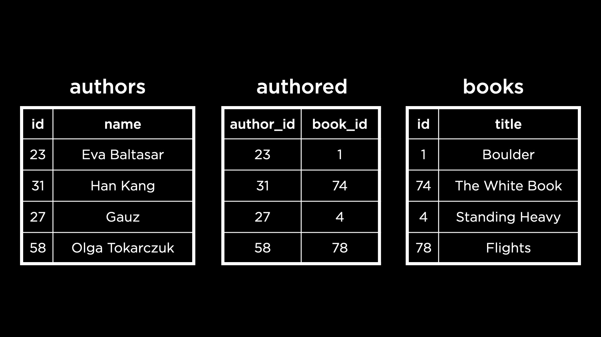
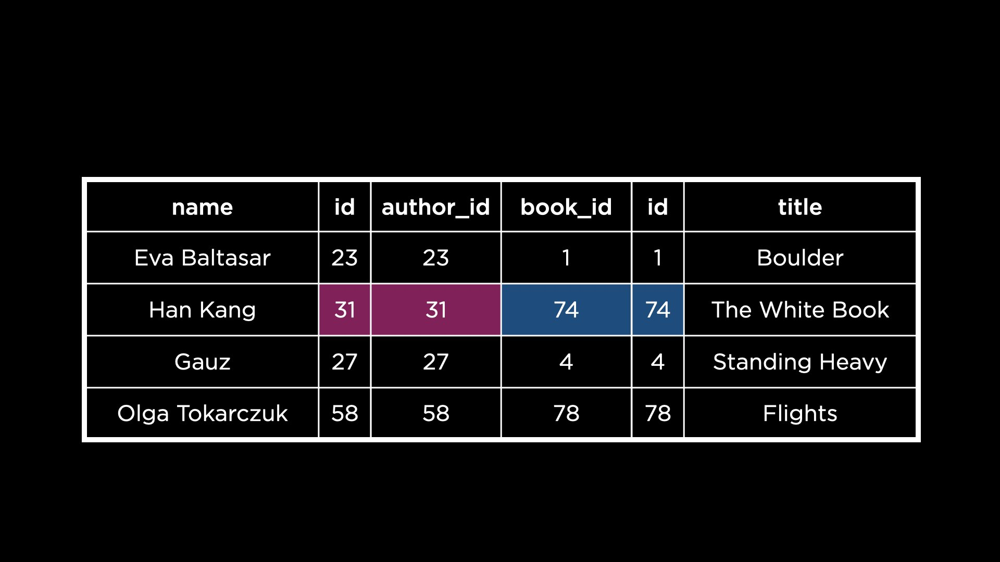
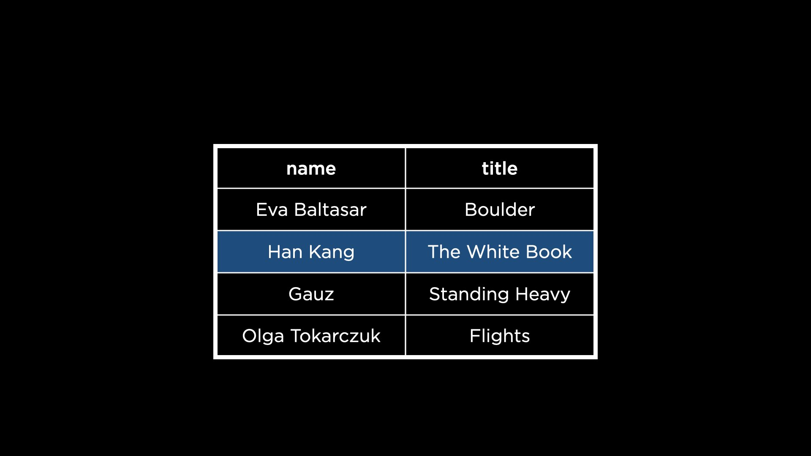
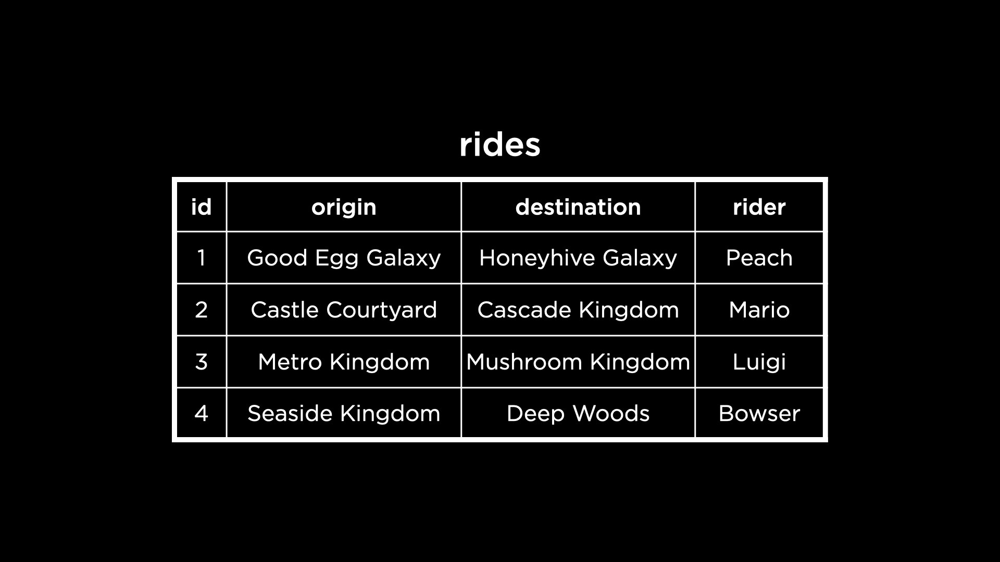
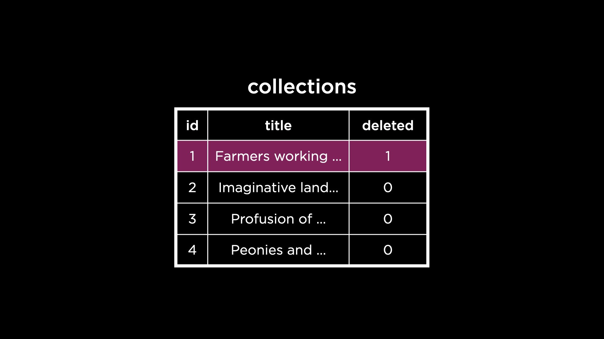

Lecture 4
- Introduction
- Views
- Simplifying
- Aggregating
- Common Table Expression (CTE)
- Partitioning
- Securing
- Soft Deletions
- Fin
Introduction
- Thus far, we have learned about concepts that allow us to design complex databases and write data into them. Now, we will explore ways in which to obtain views from these databases.
-
Let’s go back to the database containing books longlisted for the International Booker Prize. Here is a snapshot of tables from this database.

- To find a book written by the author Han Kang, we would need to go each of through the three table above — first finding the author’s ID, then the corresponding book IDs and then the book titles. Instead, is there a way to put together related information from the three tables in a single view?
-
Yes, we can use the
JOINcommand in SQL to combine rows from two or more tables based on a related column between them. Here is a visual representation of how these tables could be joined in order to line up authors and their books.
This makes it simple to observe that Han Kang authored The White Book.
-
One can also imagine removing the ID columns here, such that our view looks like the following.

Views
- A view is a virtual table defined by a query.
- Say we wrote a query to join three tables, as in the previous example, and then select the relevant columns. The new table created by this query can be saved as a view, to be further queried later on.
- Views are useful for:
- simplifying: putting together data from different tables to be queried more simply,
- aggregating: running aggregate functions, like finding the sum, and storing the results,
- partitioning: dividing data into logical pieces,
- securing: hiding columns that should be kept secure. While there are other ways in which views can be useful, in this lecture we will focus on the above four.
Simplifying
- Let us open up
longlist.dbon SQLite and run the.schemacommand to verify that the three tables we saw in the previous example are created:authors,authoredandbooks. -
To select the books written by Fernanda Melchor, we would write this nested query.
SELECT "title" FROM "books" WHERE "id" IN ( SELECT "book_id" FROM "authored" WHERE "author_id" = ( SELECT "id" FROM "authors" WHERE "name" = 'Fernanda Melchor' ) ); - The above query is complex — there are three
SELECTqueries in the nested query. To simplify this, let us first useJOINto create a view containing authors and their books. -
In a new terminal, let us connect to
longlist.dbagain, and run the following query.SELECT "name", "title" FROM "authors" JOIN "authored" ON "authors"."id" = "authored"."author_id" JOIN "books" ON "books"."id" = "authored"."book_id";- Observe that it is important to specify how two tables are joined, or the columns they are joined on.
- Tip: The primary key column of one table is usually joined to the corresponding foreign key column of the other table!
- Running this will pull up a table containing all the author names next to the titles of the books they have authored.
-
To save the virtual table created in the previous step as a view, we need to change the query.
CREATE VIEW "longlist" AS SELECT "name", "title" FROM "authors" JOIN "authored" ON "authors"."id" = "authored"."author_id" JOIN "books" ON "books"."id" = "authored"."book_id";The view created here is called
longlist. This view can now be used exactly as we would use a table in SQL. -
Let us write a query to see all the data within this view.
SELECT * FROM "longlist"; -
Using this view, we can considerably simplify the query needed to find the books written by Fernanda Melchor.
SELECT "title" FROM "longlist" WHERE "name" = 'Fernanda Melchor'; - A view, being a virtual table, does not consume much more disk space to create. The data within a view is still stored in the underlying tables, but still accessible through this simplfied view.
Questions
Can we manipulate views to be ordered, or displayed differently?
- Yes, we can order books in a view in much the same way as we can in a table.
-
As an example, let us display the data within the
longlistview, ordered by the book titles.SELECT "name", "title" FROM "longlist" ORDER BY "title"; -
We could also have the view itself be ordered. We can do this by including an
ORDER BYclause in the query used to create the view.
-
Aggregating
-
In
longlist.dbwe have a table containing individual ratings given to each book. In previous weeks, we saw how to find the average rating of every book, rounded to 2 decimal places.SELECT "book_id", ROUND(AVG("rating"), 2) AS "rating" FROM "ratings" GROUP BY "book_id"; -
The results of the above query can be made more useful by displaying the title of every book, and perhaps the year in which each book was longlisted. This information is present in the
bookstable.SELECT "book_id", "title", "year", ROUND(AVG("rating"), 2) AS "rating" FROM "ratings" JOIN "books" ON "ratings"."book_id" = "books"."id" GROUP BY "book_id";- Here, we use a
JOINto combine information from theratingsandbookstables, joining on the book ID column. - Notice the order of operations in this query — in particular, the placement of the
GROUP BYoperation at the end of the query after the two tables are joined.
- Here, we use a
-
This aggregated data can be stored in a view.
CREATE VIEW "average_book_ratings" AS SELECT "book_id" AS "id", "title", "year", ROUND(AVG("rating"), 2) AS "rating" FROM "ratings" JOIN "books" ON "ratings"."book_id" = "books"."id" GROUP BY "book_id";-
Now, let us see the data in this view.
SELECT * FROM "average_book_ratings";
-
- On adding more data to the
ratingstable, to obtain an up-to-date aggregate, we need to simply requery the view using aSELECTcommand like the above! - Each time a view is created, it gets added to the schema. We can verify this by running
.schemato observe thatlonglistandaverage_book_ratingsare now part of this database’s schema. - To create temporary views that are not stored in the database schema, we can use
CREATE TEMPORARY VIEW. This command creates a view that exists only for the duration of our connection with the database. -
To find the average rating of books per year, we can use the view we already created.
SELECT "year", ROUND(AVG("rating"), 2) AS "rating" FROM "average_book_ratings" GROUP BY "year";Notice that we select the
ratingcolumn fromaverage_book_ratings, which already contains the average ratings per book. Next, we group these by year and calculate the average ratings again, which gives us the average rating per year! -
We can store the results in a temporary view.
CREATE TEMPORARY VIEW "average_ratings_by_year" AS SELECT "year", ROUND(AVG("rating"), 2) AS "rating" FROM "average_book_ratings" GROUP BY "year";
Questions
Can temporary views be used to test whether a query works or not?
- Yes, this is a great use case for temporary views! To generalize a little, temporary views are used when we want to organize data in some way without actually storing that organization long-term.
Common Table Expression (CTE)
- A regular view exists forever in our database schema. A temporary view exists for the duration of our connection with the database. A CTE is a view that exists for a single query alone.
-
Let us recreate the view containing average book ratings per year using a CTE instead of a temporary view. First, we need to drop the existing temporary view so that we can reuse the name
average_book_ratings.DROP VIEW "average_book_ratings"; -
Next, we create a CTE containing the average ratings per book. We then use the average ratings per book to calculate the average ratings per year, in much the same way as we did before.
WITH "average_book_ratings" AS ( SELECT "book_id", "title", "year", ROUND(AVG("rating"), 2) AS "rating" FROM "ratings" JOIN "books" ON "ratings"."book_id" = "books"."id" GROUP BY "book_id" ) SELECT "year", ROUND(AVG("rating"), 2) AS "rating" FROM "average_book_ratings" GROUP BY "year";
Partitioning
- Views can be used to partition data, or to break it into smaller pieces that will be useful to us or an application. For example, the website for the International Booker Prize has a page of longlisted books for each year the prize was awarded. However, our database stores all the longlisted books in a single table. For the sake of creating the website, or a different purpose, it might be useful to have a different table (or view) of books for each year.
-
Let us create a view to store books longlisted in 2022.
CREATE VIEW "2022" AS SELECT "id", "title" FROM "books" WHERE "year" = 2022;-
We can also see the data in this view.
SELECT * FROM "2022";
-
Questions
Can views be updated?
- No, because views do not have any data in the way that tables do. Views actually pull data from the underlying tables each time they are queried. This means that when an underlying table is updated, the next time the view is queried, it will display updated data from the table!
Securing
- Views can be used to enhance database security by limiting access to certain data.
-
Consider a rideshare company’s database with a table
ridesthat looks like the following.
- If we were to give this data to an analyst, whose job is to find the most popular ride routes, it would be irrelevant and indeed, not secure to give them the names of individual riders. Rider names are likely categorized as Personally Identifiable Information (PII) which companies are not allowed to share indiscriminately.
- Views can be handy in this situation — we can share with the analyst a view containing the origin and destination of rides, but not the rider names.
- To try this out, let us open
rideshare.dbin our terminal. Running.schemashould reveal one table calledridesin this database. -
We can create a view with the relevant columns, while omitting the
ridercolumn altogether. But we will go one step further here, and create aridercolumn to display an anonymous rider for each row in the table. This will indicate to the analyst that while we have rider names in the database, the names have been anonymized for security.CREATE VIEW "analysis" AS SELECT "id", "origin", "destination", 'Anonymous' AS "rider" FROM "rides";-
We can query this view to ensure that it is secure.
SELECT * FROM "analysis";
-
- Although we can create a view that anonymizes data, SQLite does not allow access control. This means that our analyst could simply query the original
ridestable and see all the rider names we went to great lengths to omit in theanalysisview.
Soft Deletions
- As we saw in previous weeks, a soft deletion involves marking a row as deleted instead of removing it from the table.
-
For example, a piece of art called “Farmers working at dawn” is marked as deleted from the
collectionstable by changing the value in thedeletedcolumn from 0 to 1.
- We can imagine creating a view to display only the art that is not deleted.
-
To try this, let us open
mfa.dbin our terminal. Thecollectionstable does not have adeletedcolumn yet, so we need to add it. The default value here will be 0, to indicate that the row is not deleted.ALTER TABLE "collections" ADD COLUMN "deleted" INTEGER DEFAULT 0; -
Now, let us perform a soft delete on the artwork “Farmers working at dawn”, by updating it to have 1 in the
deletedcolumn.UPDATE "collections" SET "deleted" = 1 WHERE "title" = 'Farmers working at dawn'; -
We can create a view to display information about the rows that are not deleted.
CREATE VIEW "current_collections" AS SELECT "id", "title", "accession_number", "acquired" FROM "collections" WHERE "deleted" = 0;-
We can display the data in this view to verify that “Farmers working at dawn” is not present.
SELECT * FROM "current_collections"; -
On soft deletion of a row from the underlying table
collections, it will be removed from thecurrent_collectionsview on any further querying.
-
-
We already know that it is not possible to insert data into or delete data from a view. However, we can set up a trigger that inserts into or deletes from the underlying table! The
INSTEAD OFtrigger allows us to do this.CREATE TRIGGER "delete" INSTEAD OF DELETE ON "current_collections" FOR EACH ROW BEGIN UPDATE "collections" SET "deleted" = 1 WHERE "id" = OLD."id"; END;- Every time we try to delete rows from the view, this trigger will instead update the
deletedcolumn of the row in the underlying tablecollections, thus completing the soft deletion. - We use the keyword
OLDwithin our update clause to indicate that the ID of the row updated incollectionsshould be the same as the ID of the row we are trying to delete fromcurrent_collections.
- Every time we try to delete rows from the view, this trigger will instead update the
-
Now, we can delete a row from the
current_collectionsview.DELETE FROM "current_collections" WHERE "title" = 'Imaginative landscape';We can verify that this worked by querying the view.
SELECT * FROM "current_collections"; - Similarly, we can create a trigger that inserts data into the underlying table when we try to insert it into a view.
-
There are two situations to consider here. We could be trying to insert into a view a row that already exists in the underlying table, but was soft deleted. We can write the following trigger to handle this situation.
CREATE TRIGGER "insert_when_exists" INSTEAD OF INSERT ON "current_collections" FOR EACH ROW WHEN NEW."accession_number" IN ( SELECT "accession_number" FROM "collections" ) BEGIN UPDATE "collections" SET "deleted" = 0 WHERE "accession_number" = NEW."accession_number"; END;- The
WHENkeyword is used to check if the accession number of the artwork already exists in thecollectionstable. This works because an accession number, as we know from previous weeks, uniquely identifies every piece of art in this table. - If the artwork does exist in the underlying table, we set its
deletedvalue to 0, indicating a reversal of the soft deletion.
- The
-
The second situation occurs when we are trying to insert a row that does not exist in the underlying table. The following trigger handles this situation.
CREATE TRIGGER "insert_when_new" INSTEAD OF INSERT ON "current_collections" FOR EACH ROW WHEN NEW."accession_number" NOT IN ( SELECT "accession_number" FROM "collections" ) BEGIN INSERT INTO "collections" ("title", "accession_number", "acquired") VALUES (NEW."title", NEW."accession_number", NEW."acquired"); END;- When the accession number of the inserted data is not already present within
collections, it inserts the row into the table.
- When the accession number of the inserted data is not already present within
Fin
- This brings us to the conclusion of Lecture 4 about Viewing in SQL!